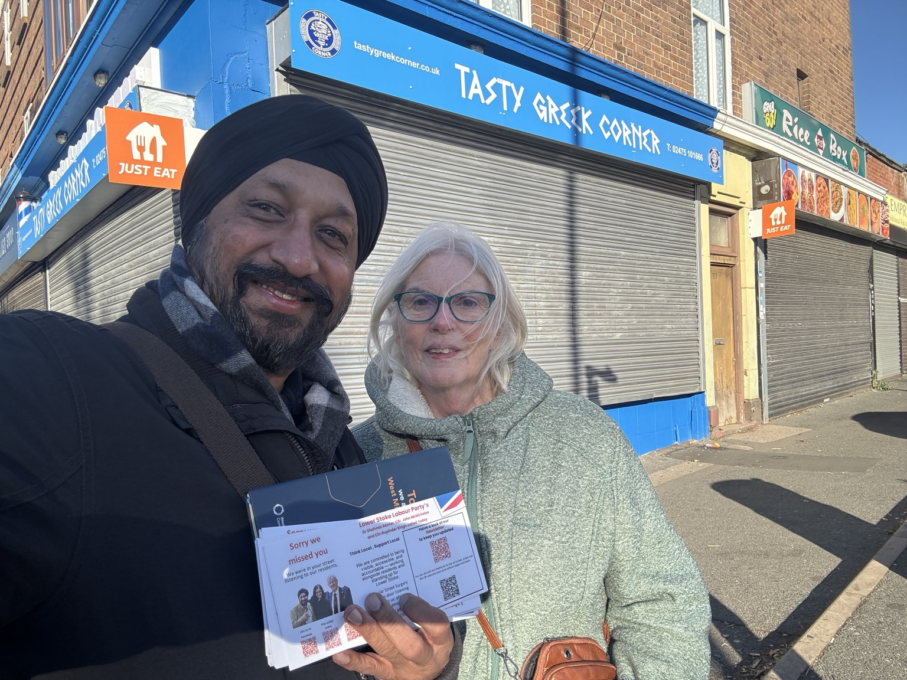
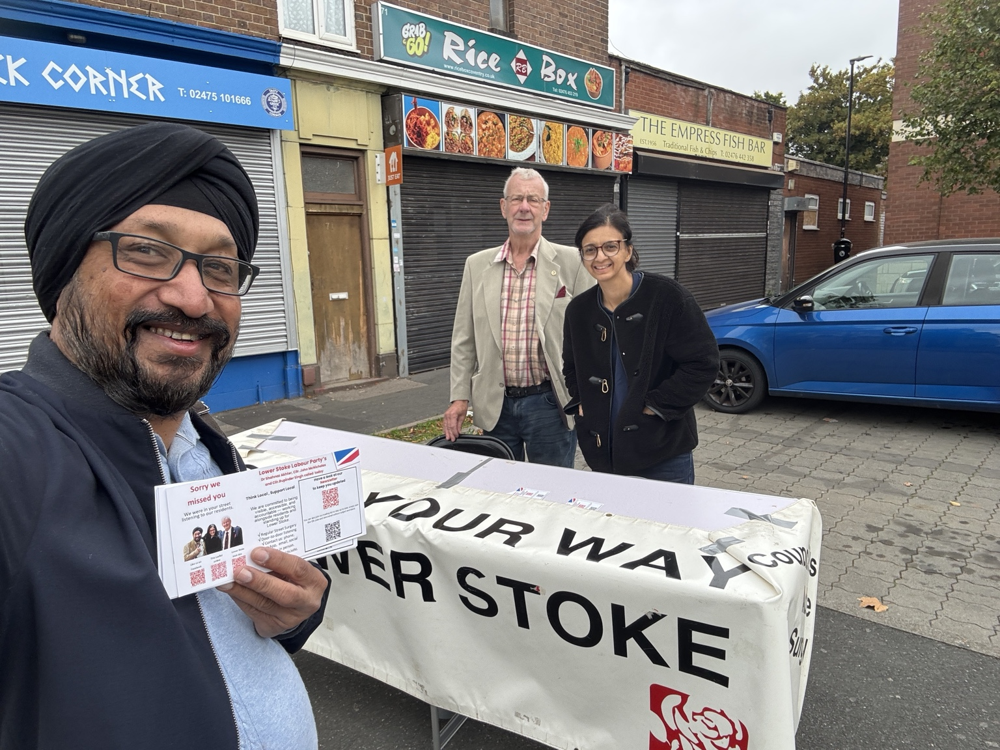
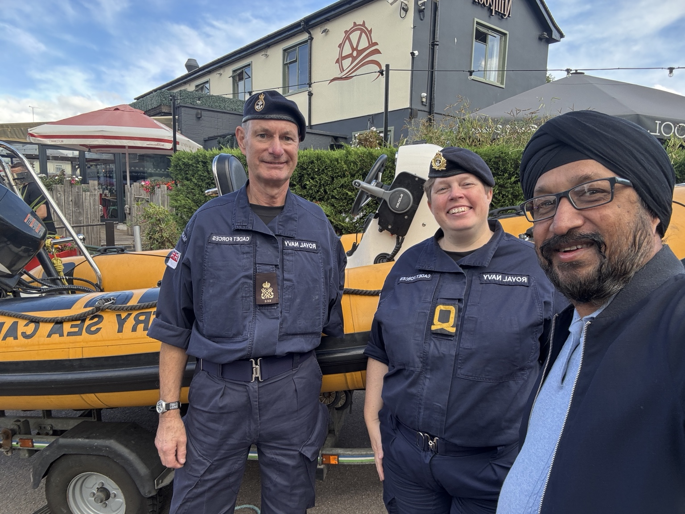
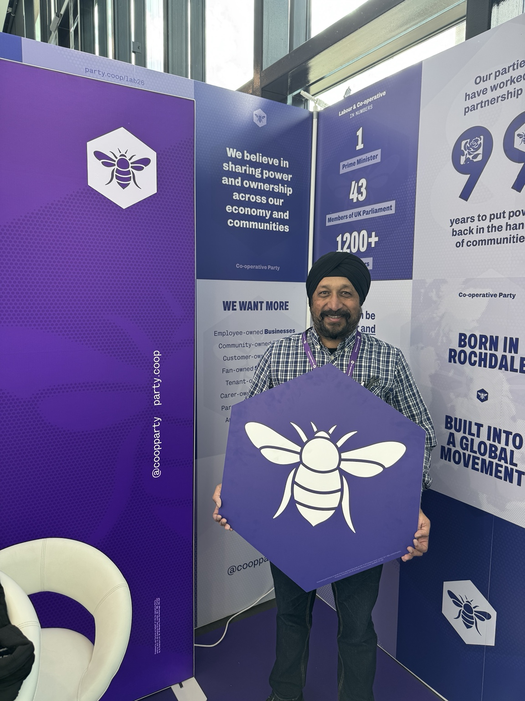

LOWER STOKE LABOUR PARTY
Working for Lower Stoke
Working with residents and our community all year round.
Always Approachable, Always Accountable, Always Available
YOUR REPRESENTATIVES
Your Lower Stoke Labour Team
Working for residents all year round.
USEFUL INFORMATION
How to Find Help
Quick links to trusted local services, reporting tools and useful information.
Report a Council Issue
Report problems such as fly-tipping, missed bins,
streetlights, parking and other Council issues.
Report to Coventry City Council →
Crime & Anti-Social Behaviour
Report crime or anti-social behaviour and find information
from your local neighbourhood policing team.
West Midlands Police →
Stoke & Wyken Local Police Information →
Roads & Transport
Report potholes and find information about buses,
public transport and West Midlands travel.
Report a Pothole →
NX Bus →
Transport for West Midlands →
On-Demand Buses →
Cost of Living
Find help with household bills, money, food,
employment and other cost-of-living pressures.
Find Cost of Living Support →
Health & Wellbeing
NHS health advice and information from
University Hospitals Coventry and Warwickshire.
NHS 111 Online →
University Hospitals Coventry & Warwickshire →
Other Help & Local Support
Find more useful services, organisations and practical
support through our Lower Stoke Self Help information.
Lower Stoke Self Help →
COME AND TALK TO US
Lower Stoke Street Surgery
1st & 3rd Saturday of every month
10:00–11:00am
Opposite Iceland/Lidl, Binley Road
No appointment needed.
Always Approachable
Always Accountable
Always Available
Always Accountable
Always Available
OUT AND ABOUT
In the Community
Listening to residents, supporting local services and representing Lower Stoke across Coventry and beyond.




GET IN TOUCH
Contact Your Lower Stoke Labour Team
For individual casework, local concerns or help finding the right service, contact one of your ward councillors.